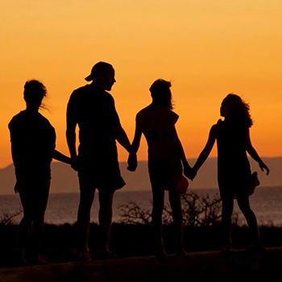
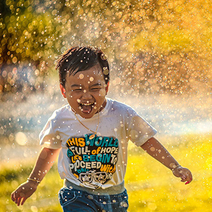
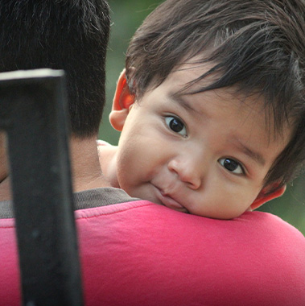
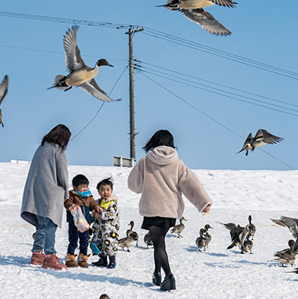
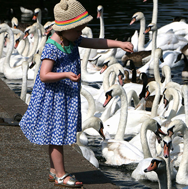
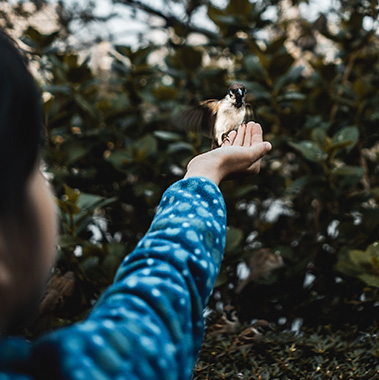

> 한국조류보호협회 >
교육활동 > 프로그램
프로그램
천연기념물 생태학교
- 체험 프로그램
- 학생 및 일반인을 대상으로 자연문화재인 천연기념물에 대한 지식과 경험을 쌓는 교육문화 강좌와 현장학습입니다.
- 교육시간
- 토·일요일(1박2일), 총 5~7시간 교육. 교육시간은 상황에 따라 변동 가능
- 모집정원
- 40명 / 회차
- 교육내용
- 생태감수성찾기 / 에코리움 나이트투어 / 지역문화탐방 / 가족추억만들기
- 활동사진
- 
- 
- 
지역학교 어린이초청
- 인성 프로그램
- 어린이들의 천연기념물 보호의식을 높이고, 어린이들에게 사회교육의 기회를 제공하며 새가 가진 다양한 모습과 신비함 그리고 인간과의 관계에 대해 가슴으로 느껴 볼 수 있도록 도와줍니다.
- 교육기간
- 방학기간 (4일간) 10:00~15:00(4시간)
- 모집정원
- 40명 / 회
- 활동사진
- 
- 
- 